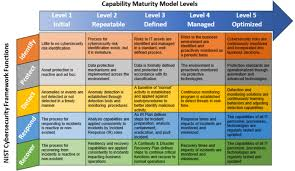

Vulnerability Management

Keeping Our Systems Safe: My Approach to Tackling Vulnerabilities
Lately, I’ve been diving deep into vulnerability management, and I thought it’d be cool to write about how I think about this process and what my overall strategy looks like.
Basically, vulnerability management is about finding and fixing security holes in our systems before bad actors can exploit them. Part of that process includes threat modeling and trying to imagine what areas of your systems will be targeted. But right now I want to focus on the process of finding and remediating vulns.
A great way to think about vulnerability management is in the context of the NIST Maturity levels framework. Getting to levels 4 or 5 in a comprehensive way across all the cybersecurity functions is a huge undertaking for most organizations.
In this post I will explain some important operational methods you should be using in your vulnerability management strategy. I broke it down into 6 parts. If you have these bases covered, you’re likely on your way to at least level 3 infosec maturity.
Accurate and up-to-date inventory:
First things first, we need to keep a detailed inventory of all our systems and infrastructure. This gives some sort of baseline source of truth to measure against. You’ll need to be familiar with all of your enterprise endpoint, server, and cloud environments, and the tools that are being used to manage them. Some important tools for this are often your AD ADUC tools, your EDR management portal, and your networking scanning tools. If you use a dedicated comprehensive inventory management product like ServiceNow or Manage Engine, that's great too.
Workstations
Constant communication with your help desk team is crucial for managing your fleet of end-user workstations. Keep tabs on newly deployed and returned machines. Knowing the status of one-off laptops and desktop machines often lets you react quickly to remediate.
Servers
Keeping tabs on your sysadmins and their work will give you insight into servers that need patching or updates. It can also help you prioritize remediation by having insight into the time/energy cost of remediating any given system. Is it a crucial server with high uptime requirements? Does the fix need to be performed during a maintenance period? What is involved in the remediation process? Is it just an off-the-shelf software update? Or is it a low-level tool that just needs a configuration change? These are the questions that need to be asked when patching servers.
Continuous Scanning:
You need to be using automated continuous scanning techniques. There are plenty of off-the-shelf tools to accomplish this. Products like Tenable Nessus, Rapid7 Nexpose, and QualysGuard are well-known options in the industry. They get you the basic but important things like vulnerability scanning, threat detection, and compliance monitoring to help identify and mitigate security risks continuously. Additionally, open-source solutions such as OpenVAS and Nikto can be used for those who prefer more customizable and cost-effective options.
Assessing the Risk:
Not all vulnerabilities are equally bad. And you need to prioritize or else you could fall behind and risk wasting resources. Prioritization can be done using several methods:
- Risk-Based Assessment: Focus on vulnerabilities that pose the highest risk to critical assets. Use CVSS scores to gauge severity.
- Threat Intelligence: Incorporate real-time threat data to identify vulnerabilities being actively exploited in the wild.
- Business Impact: Assess the potential impact on business operations if a vulnerability is exploited. Prioritize those with the highest potential impact.
- Asset Criticality: Prioritize vulnerabilities on systems that are crucial to your operations or contain sensitive data.
- Exploitability: Consider how easy it is for a vulnerability to be exploited. Prioritize easily exploitable vulnerabilities.
Using tools like Tenable.io, Rapid7 InsightVM, and Qualys VMDR can help automate this prioritization process, ensuring that your efforts are focused on the most critical vulnerabilities. How you choose to prioritize is often subject to things like the industry you are in and the business processes your organization uses as well as compliance requirements.
Another way to determine the types of vulnerabilities to target first are often the ones that are known common attack surfaces. These include:
- DMZ Assets
- End-user browser updates
- High severity + easy exploitability
Patching Things Up:
Applying patches quickly is super important. For your endpoint workstations you need to have automated version control for common end-user applications like web browsers, IDEs, and specialized apps. Tools like PDQ Deploy and Microsoft Endpoint Configuration Manager (MECM) are great for this. And on the server side Windows Server Update Services (WSUS) or Red Hat Satellite will help you get automatic updates. If we can’t patch right away, we look for other ways to reduce the risk. Things like applying workarounds, implementing temporary fixes or mitigations recommended by vendors.
Art + Science
Infosec vulnerability management is both an art and a science. It requires rigor of systematic processes like scanning, assessment, and patching, which rely on data and tools. As well as the ability to make subjective judgment calls on prioritization, risk assessment, and mitigation strategies, considering the unique context and nuances of each organization. Combining these elements ensures a balanced, effective approach to securing systems.
Effective vulnerability management focuses on the most impactful threats. By maintaining a detailed inventory, continuous monitoring, and prioritization, infosec teams can significantly increase the cost of exploitation without burdening end users.